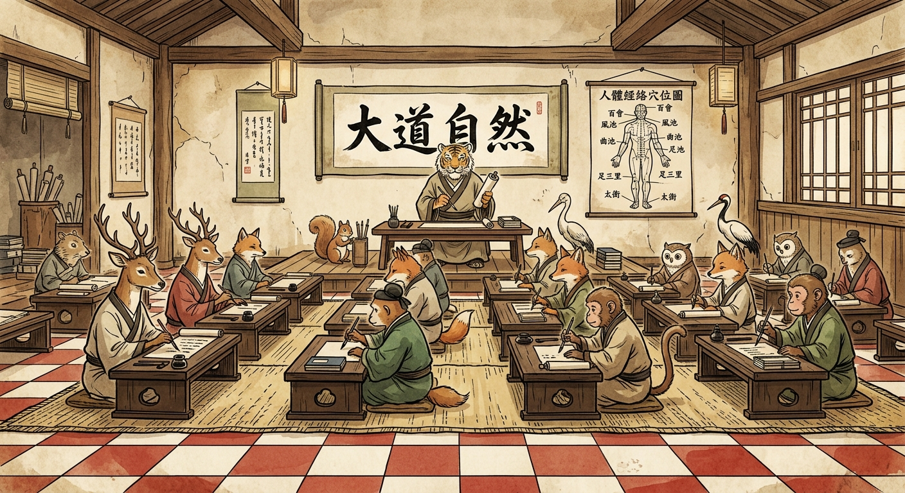

🗣️授法中

掌教法师
师
天授讲演手卷
「夫金丹之为物，烧之愈久，变化愈妙。」请点击大纲翻阅典籍
师门修道秘辛教义
藏法古籍大成
研判五行属性金木水火土配合
同学构筑磨炼功课
一功·启蒙经书
点击上方「翻阅」藏法阁大成，精研《周易参同契》或《抱朴子》，感悟其金石物质变化及丹鼎阴阳气。
徒儿，大道至纯，医鼎至简。你初进道门秘境，需通晓阴阳五行生克之学。本游戏共分三个圣殿，上方标签可切换走入：要在师尊学堂研读教诲，去仙山采得药草，最终在鼎房中起炉炼制。完成各项功课能帮助你揭开古代物质的历史化学价值、火药的意外出世、以及金石重金属的毒奥秘，寓教于乐。

「夫金丹之为物，烧之愈久，变化愈妙。」请点击大纲翻阅典籍
研判五行属性金木水火土配合
一功·启蒙经书
点击上方「翻阅」藏法阁大成，精研《周易参同契》或《抱朴子》，感悟其金石物质变化及丹鼎阴阳气。